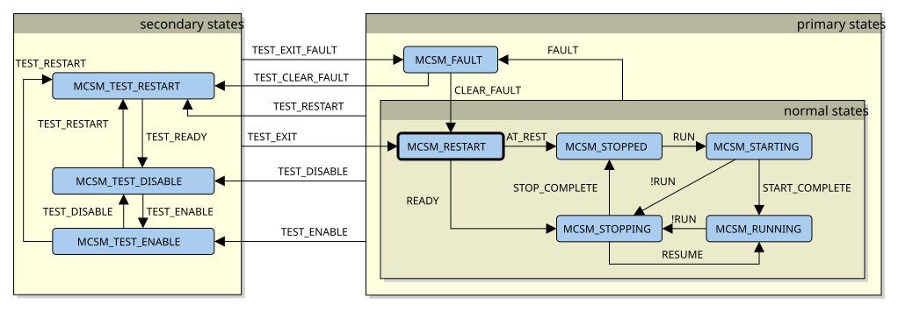

3.7. 状态机¶
电机控制状态机可以描述为分层状态机，如下 图 3.6所示。状态以蓝色显示；名称（MCSM_xxxx）是应用框架代码中使用的名称。转换条件以带标签的箭头表示。
此状态机旨在从非常高的层面处理电机控制器：它不关注电机的详细信息（是否发生堵转？是否过压？），而是围绕一般事件设计，例如是否检测到故障，或者启动或停止序列是否完成。

图 3.6 电机控制器状态图¶
3.7.1. 状态¶
这些状态分为以下子组：
主要状态：除测试操作中使用的状态外的所有状态。
正常状态：未发生故障的状态。
MCSM_FAULT：已发生故障。
次要状态：测试操作中使用的所有状态。这些状态会使正常状态机被忽略，同时也会忽略一些在测试模式下可能产生误报的故障检测算法。
此处的分组构成了分层状态机。例如：任何正常状态在检测到故障时都会转换到 MCSM_FAULT 。（传统状态机需要显示从 MCSM_FAULT 到 MCSM_STOPPED， MCSM_STARTING， MCSM_RUNNING， MCSM_STOPPING、 MCSM_INIT。）
更多细节见 状态机 部分。